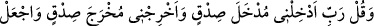
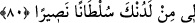

doldurur. Onların kalbleri mânevî hazlarla dolar ve aydınlanır. Sonra bunlar onların
kalblerinden gâfillerin kalblerine yayılır.
80. Ve şöyle niyaz et: Rabbim! Gireceğim yere dürüstlükle girmemi sağla;
çıkacağım yerden de dürüstlükle çıkmamı sağla. Bana tarafından, hakkıyla yardım
edici bir kuvvet ver.
“Ve şöyle niyaz et: Rabbim! Gireceğim yere” kabre “dürüstlükle” kendisinden
hoşnut olunan, kötülüklerden temizlenmiş pak bir şekilde “girmemi sağla;” ba’s günü
“çıkacağım yerden de dürüstlükle” yâni hoşnut olunan, haysiyetli bir şekilde ve
gazâbdan emin olarak “çıkmamı sağla.”
Önceki âyette ba’sdan söz edilmesi âyetin bu şekildeki tefsirine işâret etmektedir.
Âyetin mânâsı, girdirmek denilmeye lâyık olan bir girdirme ki bunda hoşa gitmeyecek
bir şey görülmez, demektir. Çünkü bu ifâdeler, kötülük üzere girdirmek ve kötülük üzere
çıkarmak karşılığında zikredilmiştir. Girdirmek ve çıkartmaktan maksadın Medine’ye
girdirmek ve Mekke’den çıkartmak olduğu da söylenilmiştir. Buna göre âyet Medine’ye
hicret emri sırasında nâzil olmuştur. “Yine onlar, seni yurdundan çıkarmak için
nerdeyse dünyayı başına dar getirecekler.” (el-İsrâ, 17/76) âyeti bu anlama delâlet
etmektedir. Yine denilmiştir ki: Âyette kasdedilen herhangi bir yer veya işe girdirmek
ve çıkartmaktır. Çoğunluk bu te’ vîli tercih etmiştir. Bu durumda âyetin mânâsı: “Beni
nereye girdirir veya nereden çıkarırsan doğruluk üzere kıl. Beni iki yüzlülerden eyleme!
Çünkü iki yüzlü olan emîn olamaz.
“Bana tarafından,” yardım ve rahmet hazinelerinden “hakkıyla yardım edici bir
kuvvet ver” Din düşmanlarına karşı bana yardım edecek bir delil ve galibiyet ver. Ya da
İslâm’a yardımcı olacak, onu küfre üstün kılacak bir mülk ve şeref ver.
Allah Teâlâ Hz. Peygamber (s.a.)’in bu duâsını “Allah seni insanlardan korur.” (el-
Mâide, 5/67), “Üstün gelecek olanlar şüphesiz Allah’ın tarafını tutanlardır.” (el-
Mâide, 5/56)”, “Bütün dinlerden üstün kılmak üzere…” (el-Fetih, 48/28)”,
“kendilerinden öncekileri sahip ve hâkim kıldığı gibi onları da yeryüzüne sahip ve
hâkim kılacağını… vaat etti.” (en-Nûr, 24/55) buyurarak kabul etmiştir. Yine İran ve
Bizans hâkimiyetini sona erdirip O’na vereceği vaadinde bulunmuştur.
Rivâyete göre Hz. Peygamber (s.a.) Attâb b. Esîd’i Mekke’ye vâli tayin etti ve ona:
“Kalk, seni Allah’ın ehline vâli tâyin ettim” buyurdu. Attâb münâfıklara karşı sert,
mü’minlere karşı yumuşak huyluydu. Bir gün “Allah’a yemin olsun ki cemâatle
namazdan geri kalan birisini görürsem boynunu vururum. Çünkü münâfıktan başkası
namazdan geri kalmaz.” dedi. Mekkeliler Hz. peygamber (s.a.)’e: “Ey Allah’ın Rasûlü,